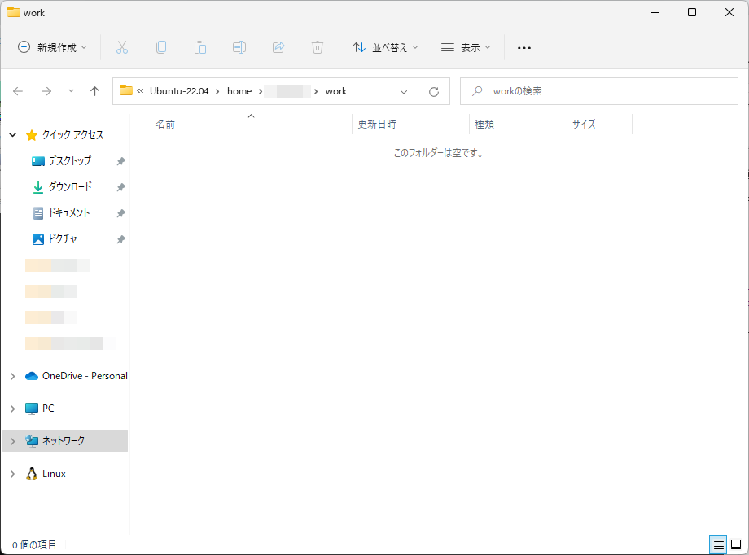

２１－０１．Bison3.8.1
開発環境を構築する
ネット上にある記事は、Windows用よりも、UNIX/Linux用のほうが数多くあります。そういった記事を参考にするためには、Unix/Linux環境を作ったうえでFlexとかBisonを使う必要があります。ここではUbuntu内に開発環境を構築する方法を説明します。Windows10とか11の環境であればwsl2を使うことで、デスクトップ内にUbuntuの環境を構築できます。
ただここで注意してほしいのはこの項からの説明で必要な環境はBison3.8.1が動作しないいけません。ですのでpowershellやコマンドプロンプトでUbuntuをセットアップした環境だと、2022年7月現在、対応できません。ですのでMicrosoftStoreから最新版のUbuntuを入手します。
MicrosoftStoreのアプリを起動して検索テキストボックスでUbuntuと検索するとUbuntu 22.04 LTSが出てきます。これをセットアップします。
セットアップしてUbuntuにログイン後最初にやるのは、アップデートです
sudo apt updateを実行し、その後
sudo apt upgradeを実行します。アップデートが終わりましたら、C/C++コンパイラなどをインストールしないといけません。Ubuntuには、オールインワンでインストールすることができます。
sudo apt install build-essentialで開発環境がインストールされます。しかしこれでFlex/Bison環境が整ったわけではなく、もう一つコマンドがあります。
sudo apt install flex bisonで開発環境が整います。
C++で作る簡単な計算機
最初に、簡単な計算機を作ってみましょう。Bison3.8.1のサイトにあります、バイソンのマニュアルの中の10.1 C++ ParsersにC++でFlex/Bisonを使う方法が記述されています。その中のC++で作る簡単な計算機の記述がありますので、これを作成してみます。
Ubuntuのホームディレクトリの中に適当な作業用ディレクトリを作成します。その中にdriver.hhというファイルを作成します。コマンドラインでviなどを使っても作業できますが、wsl2環境であれば、作業用ディレクトリに入って
explorer.exe .（最後の.ドットは必須です）
で、GUIのエクスプローラが起動します。

図210101
こうするとVSCodeなどのWindowsのテキストエディタでコードを書けるので便利です。ここで右ボタンクリックで新規作成－テキストドキュメントで新しいファイルを作成します。
新規 テキスト ドキュメント.txtという名前で作成されますが、これをdriver.hhに変更して作業を始めます。
Bison3.8.1のマニュアルの10.1.8.2 Calc++ Parsing Driverで紹介されている記述は以下です。これをdriver.hhに記述します。
# ifndef DRIVER_HH
# define DRIVER_HH
# include <string>
# include <map>
# include "parser.hh"
// Give Flex the prototype of yylex we want ...
# define YY_DECL \
yy::parser::symbol_type yylex (driver& drv)
// ... and declare it for the parser's sake.
YY_DECL;
// Conducting the whole scanning and parsing of Calc++.
class driver
{
public:
driver ();
std::map<std::string, int> variables;
int result;
// Run the parser on file F. Return 0 on success.
int parse (const std::string& f);
// The name of the file being parsed.
std::string file;
// Whether to generate parser debug traces.
bool trace_parsing;
// Handling the scanner.
void scan_begin ();
void scan_end ();
// Whether to generate scanner debug traces.
bool trace_scanning;
// The token's location used by the scanner.
yy::location location;
};
#endif // ! DRIVER_HH
続いてdriver.ccを作成し、以下を記述します。
#include "driver.hh"
#include "parser.hh"
driver::driver ()
: trace_parsing (false), trace_scanning (false)
{
variables["one"] = 1;
variables["two"] = 2;
}
int
driver::parse (const std::string &f)
{
file = f;
location.initialize (&file);
scan_begin ();
yy::parser parse (*this);
parse.set_debug_level (trace_parsing);
int res = parse ();
scan_end ();
return res;
}
続いてparser.yyを作成します。Bisonのファイルです。Calc++ Parserで説明されている部分です。
%skeleton "lalr1.cc" // -*- C++ -*-
%require "3.8.1"
%header
%define api.token.raw
%define api.token.constructor
%define api.value.type variant
%define parse.assert
%code requires {
# include <string>
class driver;
}
// The parsing context.
%param { driver& drv }
%locations
%define parse.trace
%define parse.error detailed
%define parse.lac full
%code {
# include "driver.hh"
}
%define api.token.prefix {TOK_}
%token
ASSIGN ":="
MINUS "-"
PLUS "+"
STAR "*"
SLASH "/"
LPAREN "("
RPAREN ")"
;
%token <std::string> IDENTIFIER "identifier"
%token <int> NUMBER "number"
%nterm <int> exp
%printer { yyo << $$; } <*>;
%%
%start unit;
unit: assignments exp { drv.result = $2; };
assignments:
%empty {}
| assignments assignment {};
assignment:
"identifier" ":=" exp { drv.variables[$1] = $3; };
%left "+" "-";
%left "*" "/";
exp:
"number"
| "identifier" { $$ = drv.variables[$1]; }
| exp "+" exp { $$ = $1 + $3; }
| exp "-" exp { $$ = $1 - $3; }
| exp "*" exp { $$ = $1 * $3; }
| exp "/" exp { $$ = $1 / $3; }
| "(" exp ")" { $$ = $2; }
%%
void
yy::parser::error (const location_type& l, const std::string& m)
{
std::cerr << l << ": " << m << '\n';
}
続いてscanner.lを作成します。Flexのファイルですね。Calc++ Scannerの部分です。
%{ /* -*- C++ -*- */
# include <cerrno>
# include <climits>
# include <cstdlib>
# include <cstring> // strerror
# include <string>
# include "driver.hh"
# include "parser.hh"
%}
%option noyywrap nounput noinput batch debug
%{
// A number symbol corresponding to the value in S.
yy::parser::symbol_type
make_NUMBER (const std::string &s, const yy::parser::location_type& loc);
%}
id [a-zA-Z][a-zA-Z_0-9]*
int [0-9]+
blank [ \t\r]
%{
// Code run each time a pattern is matched.
# define YY_USER_ACTION loc.columns (yyleng);
%}
%%
%{
// A handy shortcut to the location held by the driver.
yy::location& loc = drv.location;
// Code run each time yylex is called.
loc.step ();
%}
{blank}+ loc.step ();
\n+ loc.lines (yyleng); loc.step ();
"-" return yy::parser::make_MINUS (loc);
"+" return yy::parser::make_PLUS (loc);
"*" return yy::parser::make_STAR (loc);
"/" return yy::parser::make_SLASH (loc);
"(" return yy::parser::make_LPAREN (loc);
")" return yy::parser::make_RPAREN (loc);
":=" return yy::parser::make_ASSIGN (loc);
{int} return make_NUMBER (yytext, loc);
{id} return yy::parser::make_IDENTIFIER (yytext, loc);
. {
throw yy::parser::syntax_error
(loc, "invalid character: " + std::string(yytext));
}
<<EOF>> return yy::parser::make_YYEOF (loc);
%%
yy::parser::symbol_type
make_NUMBER (const std::string &s, const yy::parser::location_type& loc)
{
errno = 0;
long n = strtol (s.c_str(), NULL, 10);
if (! (INT_MIN <= n && n <= INT_MAX && errno != ERANGE))
throw yy::parser::syntax_error (loc, "integer is out of range: " + s);
return yy::parser::make_NUMBER ((int) n, loc);
}
void
driver::scan_begin ()
{
yy_flex_debug = trace_scanning;
if (file.empty () || file == "-")
yyin = stdin;
else if (!(yyin = fopen (file.c_str (), "r")))
{
std::cerr << "cannot open " << file << ": " << strerror (errno) << '\n';
exit (EXIT_FAILURE);
}
}
void
driver::scan_end ()
{
fclose (yyin);
}
最後にmain()関数が入るファイルを作成します。ファイル名は何でもよいのですがcalcCpp.ccとします。ファイルを作成したら以下を記述します。Top Levelで説明されている部分です。
#include <iostream>
#include "driver.hh"
int
main (int argc, char *argv[])
{
int res = 0;
driver drv;
for (int i = 1; i < argc; ++i)
if (argv[i] == std::string ("-p"))
drv.trace_parsing = true;
else if (argv[i] == std::string ("-s"))
drv.trace_scanning = true;
else if (!drv.parse (argv[i]))
std::cout << drv.result << '\n';
else
res = 1;
return res;
}
ソースコードはこれで終わりですが、コンパイルするのにコマンドラインでいちいちやるのは大変なのでmakeを使いましょう。Makefileという名前のファイルを作成し、以下を記述します。
calcCpp : calcCpp.cc driver.cc parser.cc scanner.cc g++ -o calcCpp calcCpp.cc driver.cc parser.cc scanner.cc scanner.cc : scanner.l flex -o scanner.cc scanner.l parser.cc parser.hh location.hh : parser.yy bison -o parser.cc parser.yyMakefileを書く時のコマンド行の先頭はタブ文字ですので気を付けましょう。
これで、makeを実行すればコンパイルできるのですが、テスト用のテキストファイル（スクリプトファイル）を作成しておきます。test.txtという名前で以下を記述します。
three := 3 seven := one + two * three seven * sevenそれでは、コンパイルして実行しましょう。Ubuntuのコマンドラインから
makeを打ち込みます。コンパイル出来たら
./calcCpp test.txtを実行してみましょう。
49という数字が出力されたら、成功です。
このサンプルは、パラメーターを指定すると、parser（Bison）あるいはscanner（flex）のトレース出力をしてくれます。
試しに、
./calcCpp -p test.txtを実行してみましょう。parser（Bison）の処理が出力されます。
./calcCpp -s test.txtとするとscanner（flex）の処理が出力されます。
./calcCpp -p -s test.txtとすると、両方の処理が出力されます。このテクニックは、将来、デバッグの、大きな助けになると思います。